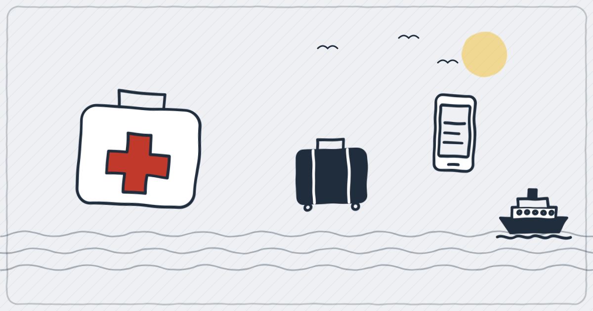

Sick Before Your Cruise? What to Do the Day Before Sailing

Get a doctor to see you today and ask for a dated note, then phone your travel insurer before you cancel anything. Inside the final two weeks the cruise line normally keeps the whole fare, so the insurance you bought before you fell ill, not the line's goodwill, is what gets the money back.
If you wake up sick the day before your cruise, do three things in this order: see a doctor and get a dated note, phone your travel insurer, and only then speak to the cruise line or the agent who booked you. The line will not refund the fare this close to sailing, so whether you lose the money comes down to the insurance you already hold and how quickly you document what happened.
Should I still go to the port if I'm sick?
Start by being honest about what kind of sick you are. Cruise terminals screen for one thing above all others: a stomach bug that could spread through a ship of 3,000 people. A sore throat or a bad cold is not in that category.
The symptoms that matter are the ones the cruise health questionnaire asks about: vomiting or diarrhea in the last few days, a fever, and sometimes a new cough. Turn up with those, answer truthfully, and the ship's medical staff will assess you at the terminal. Finished symptoms often mean you board, perhaps with a day in your cabin. Active symptoms can mean being turned away with no refund.
If your doctor says you should not travel, that settles it. The note they give you becomes the backbone of your claim.
Who do I call first when I'm sick before a cruise?
The order matters because insurers want evidence from the time you were ill, and because cancelling with the line before speaking to the insurer can cost you a claim.
- A doctor, today. A walk-in clinic, a virtual visit or your own GP all work. Ask for a note that states the diagnosis, the date, and that you are unfit to travel on your sailing dates. Keep the receipt.
- Your insurer's assistance line. The number is on your policy card. Ask what paperwork they need, whether they want to speak to the doctor, and how soon the claim must be filed. Write down the claim reference.
- The cruise line or your agent. Cancel the cruise and ask for written confirmation showing the date, the penalty charged and what is being refunded. If you booked through a consultant, one call to them handles the line, the air and the hotel together.
- Airline and hotel, if you booked them yourself. Air bought through the cruise line usually cancels with the cruise. Flights you booked directly need their own call and may only give a credit, which is one argument for matching the flight's flexibility to the cruise deposit when you decide when to book flights for a cruise.
- Pre-booked extras. Independent shore tours, parking and transfers each have their own rules, and many refund in full inside their own cut-off.
Keep the doctor's note, every confirmation email, the booking invoice and every receipt in one folder on your phone. Claims are paid on paper, not on sympathy.
Will the cruise line refund me if I cancel the day before?
Not the fare. Mainstream lines run a sliding penalty scale that reaches 100% inside the final two weeks, earlier on some fares. The call is still worth making because several things sit outside that penalty.
| What you paid | Cancelling the day before, typical outcome |
|---|---|
| Cruise fare | Lost in full on standard fares |
| Government taxes and port fees | Refunded |
| Prepaid gratuities | Refunded |
| Drinks, Wi-Fi and dining packages bought in advance | Refunded |
| Line-booked shore excursions | Refunded |
| Line-booked flights | Depends on the fare class; often a credit |
| Line's own protection plan | Refund or credit under the plan's terms |
Refundable fares are the exception, and the premium for them is paid months earlier. The situation is different again if the cruise line itself cancels the sailing, when a full refund is owed to you.
What does travel insurance need from me?
Trip cancellation cover pays out for an illness that was unforeseen when you bought the policy. That single word carries most of the weight, which is why the purchase date matters more than almost anything else.
| When you bought the policy | A new illness the day before sailing |
|---|---|
| At deposit or soon after | Covered: the textbook case, paid up to the policy limit |
| In the last few weeks, while well | Covered |
| After you started feeling unwell | Not covered, and insurers check |
| Any time, but the illness is a flare-up of an existing condition | Depends on the stability clause: a change in the condition, medication or dose inside the look-back period, often 90 to 180 days, can void the claim |
The doctor's note should name the condition, confirm the date you were seen and say plainly that you are unfit to travel. A note that says only "patient reports feeling unwell" is the one that gets queried.
Can I join the cruise late at the next port?
If you expect to be well in a day or two, ask the line about boarding "downline" at a later port. It is possible more often than people think, but with three catches.
The line must approve it in advance and note it on your booking. You pay your own way to that port, and a last-minute flight to Nassau or Cozumel is not cheap. And on sailings from US ports, boarding at a second US port is often refused because of the Passenger Vessel Services Act, which restricts foreign-flagged ships from carrying passengers between two different US ports. Joining at a foreign port avoids that problem.
Trip interruption cover, a separate benefit from trip cancellation, may reimburse the catch-up travel if a doctor confirmed you could not board on day one. Ask the insurer before you book the flight.
What if it's my partner or child who's sick?
Most policies treat the illness of a travelling companion or an immediate family member the same as your own, so a couple or family can cancel together and both claim. Ask the insurer to confirm that and note who said it.
If you decide the healthy half should sail anyway, tell the line. Some re-price the cabin at a single occupancy rate, which can be higher than the share you already paid, while others leave the fare alone and refund the port taxes for the missing guest.
Does cancel-for-any-reason cover help here?
If you bought the line's own vacation protection plan, a covered medical reason usually brings a cash refund, and anything outside the covered list is paid as a future cruise credit, typically 75% to 90% of the fare. A third-party cancel-for-any-reason policy pays cash at a percentage of the trip cost and must normally be bought within a short window after the first deposit.
Either kind earns its keep when the illness is one an ordinary policy would argue about, such as a condition that was not stable. Neither replaces the doctor's note.
Want this checked for your own sailing? A licensed cruise consultant can price it up and answer questions for free, with no obligation.
Ask a cruise expert →Could I have made this easier at booking time?
Yes, and it costs almost nothing. Buy cancellation cover on the day you pay the deposit, save the insurer's claims number and your booking number in your phone, and put the final payment date in your calendar, because that is when the penalties start to climb. If you are flying to the port, the Toronto to Miami cruise note explains why arriving the day before matters for late planes; the same buffer gives you a day to shake off a mild bug before you reach the terminal. None of it stops you getting sick. All of it decides whether getting sick costs you the whole holiday or a deductible.
Questions people also ask
Will a cruise line refund me if I'm too sick to board?
Almost never for the fare itself, because cancellation inside the last couple of weeks carries a 100% penalty on the big lines. Government taxes, port fees and anything you prepaid such as drinks packages or excursions are normally returned to your card, so ask for those.
Can I board a cruise with a cold?
Usually yes. The health screening is aimed at vomiting, diarrhea and fever in the days before sailing, not a runny nose. Declare any symptoms honestly on the questionnaire and the medical team will decide; a mild cold rarely stops anyone boarding.
Can I catch up with the ship at the next port instead?
Sometimes. The line has to approve it in advance, it is far easier at a foreign port than a second US port because of US cabotage rules, and you pay your own way there. Trip interruption insurance may reimburse the extra travel if a doctor confirmed you were unfit to board on day one.